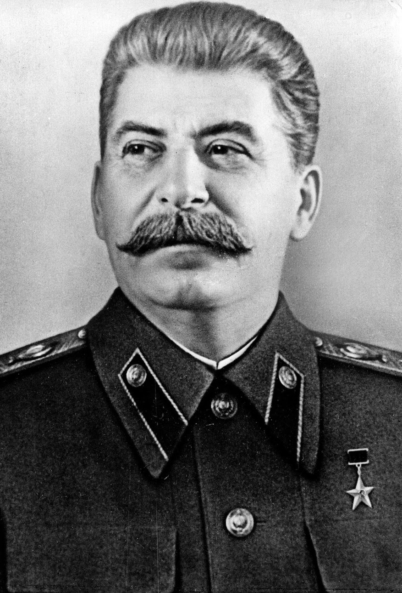

Joseph Staline (1878–1953) est le dirigeant de l’Union soviétique durant la Seconde Guerre mondiale. Chef du Parti communiste et de l’État soviétique, il exerce un pouvoir autoritaire marqué par une répression massive, des purges politiques et un contrôle total du pays.
Staline dirige l’URSS pendant l’invasion allemande de 1941. Après des erreurs stratégiques initiales, il centralise la direction militaire, mobilise l’économie soviétique et supervise les grandes offensives de l’Armée rouge. Il participe aux conférences alliées (Téhéran, Yalta, Potsdam) et impose son influence sur l’Europe de l’Est à la fin de la guerre.
Staline est étudié comme l’un des dirigeants les plus influents et controversés du XXe siècle. Son rôle dans la défaite de l’Allemagne nazie est majeur, mais son régime est également responsable de répressions massives, de famines et de millions de morts. Sa politique a profondément marqué l’histoire de l’Europe et du monde.